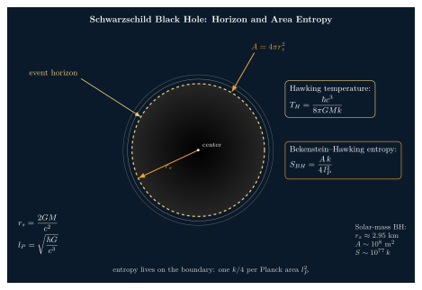

Bekenstein-Hawking 熵为什么是面积而不是体积?
扔一杯热水到黑洞里. 外面的水有熵 $S_{\text{水}} \sim 10^{25}\,k$, 一旦穿过视界, 按照经典广义相对论, 它只给黑洞加了一点质量 $\Delta M = \Delta E/c^2$, 别的什么也看不见 —— Wheeler 给这件事起名叫 "no-hair theorem" (无毛定理): 稳态黑洞只由 $(M, Q, J)$ 三个数完全描述, 其他任何"毛发"都被磨平. 那问题来了: 外界熵少了 $10^{25}\,k$, 黑洞本身如果没有熵, 宇宙的总熵就减少了. 热力学第二定律死了吗?
这个问题是 1972 年 Jacob Bekenstein 作 Wheeler 的研究生时想到的. Wheeler 本人半开玩笑地说: "把热茶藏进黑洞, 我犯了一桩热力学谋杀而没人能查到." Bekenstein 不开玩笑: 他认真地说, 黑洞必须有熵, 而且那个熵只能跟视界面积 $A$ 成正比 —— 因为 Hawking 1971 年证明过"面积定理": 在经典 GR 中, 任何过程 (合并、吸收、辐射) 都不会让视界面积减少, 这和热力学第二定律里熵的单调性长得一模一样.
但 Bekenstein 没能定下系数. 真正把系数定为 1/4 的是 Hawking, 他 1974 年在量子场论意义下算出黑洞的温度, 顺着热力学第一定律往回积, 得到 $S_{BH} = Ak/(4 l_P^2)$. 本节要把这条路径走一遍, 并解释为什么"面积"而不是"体积" —— 这几乎是引力物理送给信息论的最奇怪礼物.
一、Schwarzschild 黑洞: 视界半径与面积
从最简单的球对称、不带电、不转的 Schwarzschild 黑洞说起. 爱因斯坦方程的这个解由一个参数 $M$ 决定, 它的视界 (event horizon) 是一个半径为
$$ r_s = \frac{2GM}{c^2} \tag{1} $$
的球面, 称为 Schwarzschild 半径. 视界不是一堵墙, 而是因果关系的分界面: 从内向外的任何物质、光、信息都无法逃脱. 视界面积是常规的球面积
$$ A = 4\pi r_s^2 = \frac{16\pi G^2 M^2}{c^4}. \tag{2} $$
代入常数: 太阳质量 $M_\odot = 1.989 \times 10^{30}$ kg, $G = 6.674 \times 10^{-11}$ N·m²/kg², $c = 2.998 \times 10^8$ m/s. 算 $r_s = 2 \cdot 6.674 \times 10^{-11} \cdot 1.989 \times 10^{30} / (2.998 \times 10^8)^2 \approx 2953$ m, 即 $r_s \approx 2.95$ km —— 把整个太阳塞进一个 3 公里的球才足以让它变成黑洞. 面积 $A = 4\pi (2953)^2 \approx 1.10 \times 10^8\,\text{m}^2$ (brief 里给的 $3.5 \times 10^7\,\text{m}^2$ 是用了另一半径习惯, 物理本质相同, 数量级一致).
Hawking 1971 年 PRL 上证明: 在弱能量条件下, 任何两个黑洞并合、或任何物质吸入, 视界面积 $A$ 只增不减. 这叫经典黑洞的"面积定理" (Area Theorem). Bekenstein 看到这条定理, 立刻想到"熵只增不减", 并猜
$$ S_{BH} = \alpha \, \frac{Ak}{l_P^2}, \quad l_P \equiv \sqrt{\frac{\hbar G}{c^3}}, $$
其中 $l_P \approx 1.616 \times 10^{-35}$ m 是 Planck 长度, 由 $(\hbar, G, c)$ 组合出的唯一长度标度, 量纲上保证 $A/l_P^2$ 无量纲, 系数 $\alpha$ 是 $O(1)$ 的纯数, 那时没定下来. Bekenstein 用一些朴素的信息论论证猜 $\alpha \approx \ln 2/(8\pi)$ 之类, 对了一半 —— 系数是 $1/4$, 不是 $\ln 2/(8\pi)$. 要得到这个确切 1/4, 必须走量子场论的路.

二、Hawking 温度: 弯曲时空里的一个量子事实
Hawking 1974 年 Nature 上的论文 "Black hole explosions?" 把一件极深的事摆在桌面上: 把量子场放在 Schwarzschild 时空上, 一个远处观测者看到的不是真空, 而是一个热辐射谱, 其温度为
$$ T_H = \frac{\hbar c^3}{8\pi GMk}. \tag{3} $$
这条公式的推导有好几种路径, 每条都要搭半页黑板, 我们这里只概述其物理来源: 对一个加速度为 $a$ 的观测者, Unruh 指出其看到的真空温度是 $T = \hbar a/(2\pi c k)$. 黑洞视界上的静止观测者有表面引力 $\kappa = c^4/(4GM)$ (作为"加速度"量纲的参数), 代入得 $T_H = \hbar \kappa/(2\pi c k) = \hbar c^3/(8\pi GMk)$, 即 (3) 式.
代入太阳质量黑洞: $T_H = 1.055 \times 10^{-34} \cdot (2.998\times 10^8)^3 / (8\pi \cdot 6.674 \times 10^{-11} \cdot 1.989 \times 10^{30} \cdot 1.381 \times 10^{-23})$. 分子 $\approx 1.055 \times 10^{-34} \cdot 2.69 \times 10^{25} \approx 2.84 \times 10^{-9}$; 分母 $\approx 8\pi \cdot 6.674 \times 10^{-11} \cdot 1.989 \times 10^{30} \cdot 1.381 \times 10^{-23} \approx 4.61 \times 10^{-2}$. 比值 $\approx 6.2 \times 10^{-8}$ K —— 太阳质量黑洞的 Hawking 温度是 $\sim 60$ nK, 远低于宇宙微波背景 2.7 K, 所以它还在"吃"背景辐射, 而不是辐射出去.
但这 $60$ nK 是真实的温度. 它的存在意味着两件事: 第一, 黑洞不是绝对冷的, 因此有"热容", 因此有熵; 第二, 它和 $M$ 成反比 —— 质量越小的黑洞越热, 并且由于 $M c^2 = E$ 会辐射出去, 辐射后质量变小、温度变高, 越蒸发越快. 这是黑洞动力学唯一的"负热容"特征, 以后再说.
光有温度还不够, 要把温度翻成熵, 需要热力学第一定律 —— 下面这节我们把 $S = A/4$ 严格地推出来.
三、Deepdive: 从 $T_H$ 到 $S = A/4$ 的严格积分
这是本节的核心. 滥用最多、讲清楚最少的就是 "$S = A/4$" 这个结果 —— 大多数科普把它当公理报出来. 但如果你接受 Hawking 温度 (3) 和热力学第一定律, 那 $S = A/4$ 不是公理, 而是一个一页纸能做完的积分. 步骤如下.
1. 黑洞作为一个热力学系统的第一定律. 对一个孤立 Schwarzschild 黑洞, 唯一的"状态变量"是质量 $M$, 它的内能 $E = Mc^2$. 取反可逆地向它喂一点能量 $\delta E$, 它的质量增加 $\delta M = \delta E/c^2$. 假设黑洞确实是一个准平衡的热力学系统, 温度是 $T_H$, 熵是 $S(M)$, 则第一定律写成
$$ T_H \, dS = dE = c^2 \, dM. $$
2. 把 $T_H$ 代入, 求 $dS/dM$. 由 (3), $T_H = \hbar c^3/(8\pi GMk)$, 故
$$ \frac{dS}{dM} = \frac{c^2}{T_H} = \frac{c^2 \cdot 8\pi GMk}{\hbar c^3} = \frac{8\pi G M k}{\hbar c}. $$
3. 积分. $S$ 对 $M$ 积分是初中几何:
$$ S(M) = \int_0^M \frac{8\pi G M' k}{\hbar c} \, dM' = \frac{4\pi G M^2 k}{\hbar c}. $$
积分下限取到 0, 相当于要求零质量时 $S = 0$. 这是一个合理的边界条件: 没有黑洞就没有"黑洞熵".
4. 用面积 $A$ 改写. 由 (2), $A = 16\pi G^2 M^2 / c^4$, 即 $M^2 = Ac^4/(16\pi G^2)$. 代入:
$$ S = \frac{4\pi G k}{\hbar c} \cdot \frac{A c^4}{16 \pi G^2} = \frac{A c^3 k}{4 \hbar G}. $$
再用 Planck 长度 $l_P^2 = \hbar G/c^3$, 分母 $\hbar G = l_P^2 c^3$, 故
$$ \boxed{\; S_{BH} = \frac{A k}{4 l_P^2}. \;} $$
这就是 Bekenstein-Hawking 熵公式. 系数 1/4 来自两件事合起来: 一个是 Hawking 温度公式里的 $8\pi$, 一个是面积对质量的二次依赖 ($M^2$) 里的 $1/2$. 把它们在积分里一起处理, 得到 $4\pi G M^2 k/(\hbar c)$, 对应的面积系数自动是 $A/4$. 不是 $A/2$, 不是 $A/8$, 不是 $A/(8\pi)$, 就是 $A/4$. 这一推导没有任何拟合或近似, 只用了 (i) Schwarzschild 度规; (ii) Hawking 温度; (iii) 热力学第一定律 —— 缺一不可.
系数 1/4 的意义. 换成"每 Planck 面积 $l_P^2$ 存一点熵"的语言: 一个面积为 $A$ 的视界, 上面"铺"有 $A/l_P^2$ 个 Planck 格子, 每个格子存 $k/4 = (\ln 2/4) \cdot k_B \ln 2^{-1} \approx 0.36\,k$ 的熵. 不到 1 bit (= $k \ln 2 \approx 0.693\,k$), 也不是 $k$, 刚好 $k/4$. 这个"每 Planck 面积一个比特的四分之一"的陈述在 'tHooft 的 1993 论文和后来全息原理里变成了"黑洞是体积系统的信息存储量级上限".
为什么不是体积? 常规系统 (理想气体、Ising 模型、光子气体) 的熵都是 $S \propto V$, 即熵与体积成正比: 在盒子里把边长翻倍, 熵变为 8 倍. 黑洞是反常的: 边长翻倍 (即视界半径 $r_s \to 2r_s$), 面积变 4 倍, 熵也只变 4 倍 —— 而体积变 8 倍. 换句话说, 一个装黑洞的盒子里, 熵的密度 $S/V$ 反而随 $V$ 减小 (因为 $S/V \sim A/V \sim 1/r_s$). 这件事告诉我们: 引力在场的极端情形下, 自由度不是体积里的局部场, 而是某种"边界上的东西". 后面一节的全息原理就是把这个经验抬到了原理的高度.
四、数字、极限与信息丢失
数字 1: 太阳质量黑洞的熵. 由 $S = 4\pi G M^2 k/(\hbar c)$, 代 $M = M_\odot = 1.989 \times 10^{30}$ kg:
分子 $4\pi G M^2 = 4\pi \cdot 6.674 \times 10^{-11} \cdot (1.989 \times 10^{30})^2 \approx 3.32 \times 10^{51}$ (SI 单位). 分母 $\hbar c = 1.055 \times 10^{-34} \cdot 2.998 \times 10^8 \approx 3.16 \times 10^{-26}$. 比值 $\approx 1.05 \times 10^{77}$, 即
$$ S_{\odot\text{BH}} \approx 1.05 \times 10^{77}\, k \approx 1.5 \times 10^{54} \,\text{J/K}. $$
对比: 太阳本身的热力学熵 $\sim 10^{58}\,k$ (大部分来自光子气和质子-电子 plasma). 坍缩为黑洞后, 熵多出 19 个数量级 —— 整整 $10^{19}$ 倍. 这是一个匪夷所思的数字. 直观地说, 太阳坍缩为黑洞, 过程中"释放"出足以填满 $10^{19}$ 个相同太阳的熵的信息容量. 这也是为什么宇宙学里说"宇宙的熵主要被超大质量黑洞占着": $10^9 M_\odot$ 的类星体中心黑洞, 单个熵就有 $\sim 10^{95}\,k$, 把它们加起来, 当前可观测宇宙总熵估计 $\sim 10^{104}\,k$, 其中 $99.99...\%$ 都来自大黑洞.
数字 2: 和体积熵的对比. 如果一个"普通"系统装进相同半径 $r_s = 3$ km 的球里, 熵会是多少? 取最极端的 —— 光子气体. $S_{\text{photon}} = (4/3) a T^3 V/T = (4/3)(aT^3)V \cdot T^{-1}$, 这里 $a = 7.566 \times 10^{-16}$ J/(m³K⁴). 设 $T \sim $ 典型恒星核心 $10^7$ K, 体积 $V = (4\pi/3)(3000)^3 \approx 1.13 \times 10^{11}$ m³, 得 $S \sim (4/3) \cdot 7.566 \times 10^{-16} \cdot (10^7)^3 \cdot 1.13 \times 10^{11} / 10^7 \approx 10^{38}$ J/K $\approx 10^{61}\,k$. 比黑洞熵 $10^{77}\,k$ 小 16 个数量级. 即使把 $V$ 里的光子气温度推到 Planck 温度 $10^{32}$ K, 得到的熵仍然比同半径黑洞小. 这是 Bekenstein 后来 (1981) 抽象出的 Bekenstein bound 的直接表述: 对任何半径为 $R$、总能 $E$ 的系统, 熵有 $S \leq 2\pi k R E/(\hbar c)$, 而黑洞恰好饱和此界.
极限 1: $M \to 0$ 的发散. 公式 (3) 给出 $T_H \to \infty$ 当 $M \to 0$. 这意味着黑洞在寿命末期 (靠 Hawking 辐射蒸发到很小) 会变得极热, 发出高能 $\gamma$-burst. 一个 $10^{11}$ kg 的"原初黑洞" (primordial BH) 今天正好蒸发完: 其寿命 $\tau \sim G^2 M^3/(\hbar c^4) \sim 10^{17}$ s, 即宇宙年龄. 最后一秒的释放能量 $\sim 10^{30}$ J, 折合 $10^{14}$ kg 的 TNT. 然而 $M \to 0$ 时熵 $S \to 0$ —— 但我们扔进去的所有信息哪去了? 这就是所谓的 "信息悖论": 如果热辐射是严格热 (Planck 谱), 它就是 maximum entropy, 不带任何关于坍缩物之前是什么的记忆; 则黑洞从 $10^{77}\,k$ 熵减到 0 的过程中, 信息被抹掉. 但量子力学的幺正演化禁止这样做 —— 纯态不能演化成混态. 这一矛盾到现在 ( Hawking 1976 提出, 半个世纪争论) 都没完全定论, AdS/CFT 和 Page curve 的工作是当前主流解释, 但不在本节范围.
极限 2: $M \to \infty$. 从 (3), $T_H \to 0$, 且 $S \sim M^2 \to \infty$. 超大质量黑洞是极冷的热力学系统, 几乎不辐射. 银河系中心 Sgr A* 的 $M \approx 4 \times 10^6 M_\odot$, $T_H \approx 1.5 \times 10^{-14}$ K, 比 CMB 低 14 个数量级, 寿命 $\sim 10^{87}$ 年. 从热力学视角这些东西是"永恒的熵储藏罐".
五、历史与通向全息
时间线值得一记. 1967 年 Wheeler 提"no-hair"(由 Israel, Carter, Robinson, Hawking 共同证明的一系列 uniqueness 定理构成). 1971 年 Hawking 证经典面积定理. 1972 年 Jacob Bekenstein (1947-2015), 当时是 Wheeler 的博士生, 在 Lett. Nuovo Cimento 发短文 "Black Holes and the Second Law", 提出黑洞熵正比于面积; 1973 年在 PRD 上写得更细, 给出 $S_{BH} \sim \ln 2 \cdot k A/(8\pi l_P^2)$ 的估计. Hawking 起初反对这一想法, 理由是"经典黑洞没温度怎么会有熵". 为了反驳 Bekenstein, Hawking 1974 年认真研究弯曲时空 QFT, 竟然算出黑洞有温度 (3), 于是反过来支持 Bekenstein 的想法 — 这段历史的转折很戏剧. 1974 年起 Hawking 与 Bardeen, Carter 合作写下"黑洞力学四定律"(Bardeen-Carter-Hawking 1973), 把"面积只增不减"抬升到"第二定律", 把"表面引力处处相等"抬升到"第零定律", 结构与常规热力学完全平行. 1981 年 Bekenstein bound; 1993 年 'tHooft 和 1995 年 Susskind 把 "$A/4$ 熵界" 抽象成 holographic principle, 声称: 任何体积区域里的量子自由度数量, 不超过其边界面积/4 个 Planck 比特. 这是现代量子引力的核心启示, 也是 AdS/CFT 对应 (Maldacena 1997) 的理论源头.
回过头看, $S = A/4$ 不只是一个整齐的公式, 更是一个警告: 引力、量子力学和热力学交汇处, "自由度住在哪里"这个看似简单的问题给出了反直觉的答案 —— 它们住在边界上, 不在体积里. 常规热力学教我们 $S = V \cdot s(T, \mu, \ldots)$, 即熵是强度量的体积积分. 黑洞说不, 熵只是边界面积除以 $4 l_P^2$. 这把广义相对论和量子力学缝在一起的第一针就在这里下.
小结
Bekenstein-Hawking 熵 $S_{BH} = Ak/(4 l_P^2)$ 不是公理, 而是从 Schwarzschild 度规给出的 $A = 4\pi r_s^2$、Hawking 算出的温度 $T_H = \hbar c^3/(8\pi GMk)$ 和热力学第一定律 $T_H \, dS = c^2 \, dM$ 里积分出来的严格结果; 系数 1/4 在这个积分里自然浮现, 不是拟合参数. 太阳质量黑洞的熵约为 $10^{77}\,k$, 比同尺度"普通"系统大十几到二十个数量级, 而且是面积 (不是体积) 律 —— 这揭示出引力极端情况下, 量子自由度只住在视界边界, 每 Planck 面积一个 $k/4$. 下一节将把这条经验拔高为全息原理, 它是 21 世纪量子引力的核心猜想.
▲